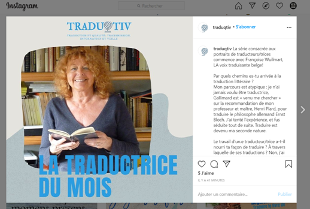

<!DOCTYPE html>
<html class='no-js' lang='en'>
<head>
<meta charset='utf-8'>
<title>Interviews &mdash; CETL – Centre Européen de Traduction Littéraire</title>
<meta content='Centre Européen de Traduction Littéraire. Avec le soutien de la Communauté française de Belgique, de la Commission communautaire française.' name='description'>
<meta content='traduction, traduction littéraire' name='keywords'>
<meta content='Françoise Wuilmart' name='author'>
<meta content='Interviews &amp;mdash; CETL – Centre Européen de Traduction Littéraire' name='DC.title'>
<meta content='width=device-width, initial-scale=1' name='viewport'>
<link href="../../../stylesheets/styles-79adecb8.css" rel="stylesheet" />
<link href='/humans.txt' rel='author'>
<link href='favicon.ico' rel='shortcut icon'>
<script>
  (function(i,s,o,g,r,a,m){i['GoogleAnalyticsObject']=r;i[r]=i[r]||function(){
  (i[r].q=i[r].q||[]).push(arguments)},i[r].l=1*new Date();a=s.createElement(o),
  m=s.getElementsByTagName(o)[0];a.async=1;a.src=g;m.parentNode.insertBefore(a,m)
  })(window,document,'script','//www.google-analytics.com/analytics.js','ga');
  ga('create', 'UA-2826331-7', 'auto');
  ga('require', 'displayfeatures');
  ga('send', 'pageview');
</script>

</head>
</html>

<body class='page'>
<!--[if lte IE 8]><p class='browser-upgrade'>You are using an
<strong>outdated</strong>
browser. Please
<a href="http://browsehappy.com/" rel="external" target="_blank">upgrade your browser</a>to improve your experience.</p><![endif]-->

<header class='banner navbar navbar-default navbar-static-top' role='banner'>
<div class='container'>
<div class='navbar-header'>
<button class='navbar-toggle' data-target='.navbar-collapse' data-toggle='collapse' type='button'>
<span class='sr-only'>Toggle navigation</span>
<span class='icon-bar'></span>
<span class='icon-bar'></span>
<span class='icon-bar'></span>
</button>
<a class='navbar-brand' href='/'>CETL</a>
</div>
<nav class='collapse navbar-collapse' role='navigation'>
<ul class='nav navbar-nav' id='menu-primary-navigation'>
<li class=''>
<a href="/le-cetl/direction/">Direction</a>
</li>
<li class=''>
<a href="/seminaires-presentiel/">Séminaires en présentiel</a>
</li>
<li class=''>
<a href="/ateliers-visio/">Ateliers en visio-conférence</a>
</li>
<li class=''>
<a href="/articles/">Articles</a>
</li>
<li class=''>
<a href="/liens/">Liens</a>
</li>
<li class=''>
<a href="/contact/">Contact</a>
</li>
</ul>
</nav>
</div>
</header>

<div class='jumbo-background hidden-xs'>
<div class='container'>
<div class='row'>
<div class='col-12'>
<h1 class='jumbo-title'>Centre européen de traduction littéraire</h1>
</div>
</div>
</div>
</div>

<div class='wrap container' role='document'>
<div class='content row'>
<div class='col-sm-12 col-md-3 col-lg-3 hidden-xs sidebar sidebar-left'>
<ol class='menu' id='menu-submenu'>
<li class=''>
<a href="/le-cetl/direction/">Direction</a>
</li>
<li class=''>
<a href="/le-cetl/direction/publications">Publications</a>
</li>
<li class=''>
<a href="/le-cetl/direction/interviews">Interviews</a>
</li>
</ol>
</div>

<div class='main col-sm-12 col-md-6 col-lg-6'>
<h1>
Interviews
</h1>
<p></p>

<p>La série consacrée aux portraits de traducteurs/trices commence avec Françoise Wuilmart, LA voix traduisante belge!</p>

<p>Par quels chemins es-tu arrivée à la traduction littéraire ?
Mon parcours est atypique : je n’ai jamais voulu être traductrice, Gallimard est « venu me chercher » sur la recommandation de mon professeur et maître, Henri Plard, pour traduire le philosophe allemand Ernst Bloch. J’ai tenté l’expérience, et fus séduite tout de suite. Traduire est devenu ma seconde nature.</p>

<p>Le travail d’un.e traducteur/trice a-t-il nourri ta façon de traduire ? À travers laquelle de ses traductions ? Non, j’ai appris seule, sur le tas. Quelques principes ont d’emblée guidé ma conduite traductive : avoir de l’empathie avec le texte, faire entendre la voix de l’Autre en respectant la langue d’arrivée et… « Décoller sans déconner », telle est ma devise !</p>

<p>Aimes-tu traduire un genre littéraire en particulier ? Non. J’ai traduit tous les genres : philosophie, essais de sciences humaines, romans, nouvelles, poésie, théâtre, avec un égal plaisir.</p>

<p>Une de tes traductions dont tu es la plus satisfaite ? Dur à dire ! Une Femme à Berlin, journal intime d’une jeune femme, écrit au quotidien pour survivre et garder sa dignité, dans ce Berlin de 1945 où les soldats de l’Armée rouge violent les femmes. Je ressentais une grande empathie avec ce texte. On m’a dit que le style et le ton étaient parfaitement rendus en français. Bien sûr, il y a les nouvelles et aussi le Magellan de Stefan Zweig, écrits dans ce style qui vibre et vit à chaque ligne et que je parviens à entonner facilement.</p>

<p>Pourquoi traduis-tu ? Parce que cela me rend heureuse. C’est un acte créatif : jouer avec ma langue maternelle, la faire se contorsionner, lui extirper des choses qu’elle n’aurait pas dites spontanément. C’est un jeu qui maintient l’esprit curieux, ouvert, tolérant, et à part l’amour, qu’est-ce qui rend heureux si ce n’est la créativité, lexicale, musicale, rythmique, et in fine… vitale ?</p>

<h2>Autres</h2>

<p>Interview Université de Western Australia :
Comment devient-on traducteur ?
<br><a href="https://youtu.be/vgfoyyqr6iM">https://youtu.be/vgfoyyqr6iM</a></p>

<p>Les avatars du texte en traduction ; réflexions d’une praticienne.
<br><a href="https://www.erudit.org/fr/revues/memoires/2017-v9-n1-memoires03394/">https://www.erudit.org/fr/revues/memoires/2017-v9-n1-memoires03394/</a></p>

<p>Retraduire Stefan Zweig
<br><a href="http://www.bon-a-tirer.com/auteurs/wuilmart.html">http://www.bon-a-tirer.com/auteurs/wuilmart.html</a></p>

<p>Les avatars du texte en traduction ; réflexions d’une praticienne.
<br><a href="https://www.erudit.org/fr/revues/memoires/2017-v9-n1-memoires03394/">https://www.erudit.org/fr/revues/memoires/2017-v9-n1-memoires03394/</a></p>

<p>Dans revue bulgare
<br><a href="http://psychanalyse-journalisme-humour.blogspot.com/">http://psychanalyse-journalisme-humour.blogspot.com/</a></p>

<p>Radio tv Arthis Foire du livre de Bruxelles
<br><a href="https://www.youtube.com/watch?v=RASYZkuhE7E">https://www.youtube.com/watch?v=RASYZkuhE7E</a></p>

<p>Séance plénière, Colloque en Géorgie
<br><a href="https://www.youtube.com/watch?v=Vo3zLu5RxWc">https://www.youtube.com/watch?v=Vo3zLu5RxWc</a></p>

<p>Hommage à JDD chez Toussaint, Chapitre XII
<br><a href="https://drive.google.com/file/d/1Kg6-2U1fM_pKxMGqUkCedUDA8RUyM30z/view?usp=sharing">https://drive.google.com/file/d/1Kg6-2U1fM_pKxMGqUkCedUDA8RUyM30z/view?usp=sharing</a></p>

</div>
<aside class='sidebar hidden-xs hidden-sm col-md-3 col-lg-3' role='complementary'>
<div class='thumbnail'>

</div>
</aside>

</div>
</div>
<footer class='container' role='contentinfo'>
<div class='row'>
<div class='col-lg-12'>
<p class='text-center'>
© 2025 CETL – Centre Européen de Traduction Littéraire
</p>
</div>
</div>
</footer>

<script src='https://cdn.jsdelivr.net/lodash/4.17.4/lodash.min.js'></script>
<script src="../../../javascripts/scripts-da39a3ee.js"></script>
</body>
